O módulo de missão de serviço é uma solução integrada que visa digitalizar e automatizar os processos relacionados com viagens de trabalho dos colaboradores da organização. Atualmente, estes processos envolvem múltiplos intervenientes, incluindo as direções organizacionais, recursos humanos (RH), o Sistema de Gestão Administrativa e Logística (SGAL), agências de viagem e o departamento financeiro.
A necessidade de um sistema integrado surge da complexidade dos processos atuais, que envolvem múltiplas aprovações, comunicações por email, gestão manual de documentos e controlo disperso de pagamentos. O sistema proposto pretende centralizar todas estas operações numa plataforma única, proporcionando maior eficiência, transparência e controlo sobre todo o processo.
O módulo de Missão de Serviço Abrange todas as fases do ciclo de vida de uma missão (origem à conclusão e registo financeiro). Inclui funcionalidades complementares de apoio à gestão.
A seguir, apresenta-se o mapa das funcionalidades de Gestão de Missões de Viagem, acompanhado de um quadro descritivo das suas principais funcionalidades
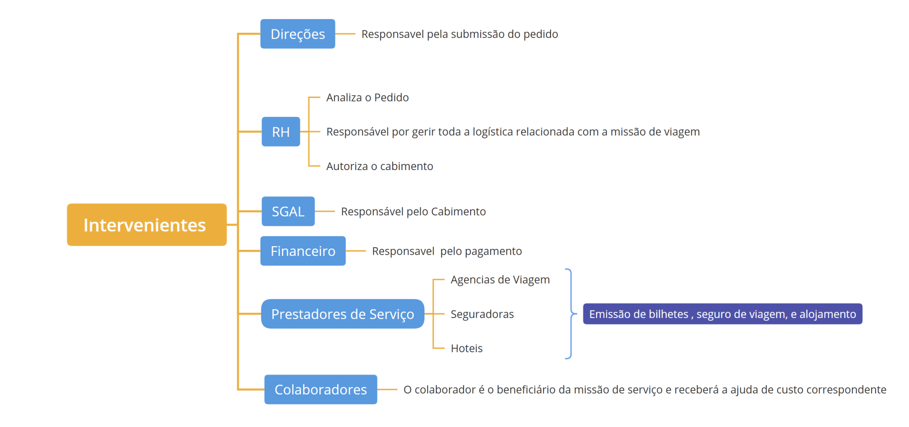
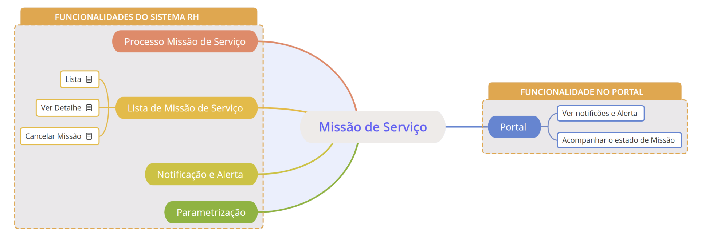
| Funcionalidade | Descrição |
|---|---|
| Processo de Missão de Viagem | O processo de missão de serviço inicia-se com o pedido autorizado pela direção, identificando o colaborador, destino e datas da viagem. O RH recebe o pedido e trata da logística, incluindo o envio de pedidos de propostas a agências, seleção do fornecedor, emissão de requisição e recolha de faturas e finaliza com o pagamento. As despesas são organizadas nos seguintes tipos: ajuda de custo, passagem e alojamento, seguro de viagem. O sistema deve permitir anexos, notificações automáticas, controlo de pagamentos e integração com o SGAL para cabimento das faturas. |
| Lista de Missão de Serviço | Esta funcionalidade permite visualizar, de forma centralizada, todas as missões de serviço registadas no sistema. A lista apresenta informações essenciais como número da missão, nome do colaborador, destino, datas da viagem, estado do processo (em análise, requisitada, cabimentada, paga) e situação das faturas associadas. Através desta funcionalidade, o RH pode acompanhar o andamento de cada missão, filtrar por período, tipo (nacional ou internacional), colaborador ou estado, além de aceder rapidamente aos detalhes, documentos anexos. |
| Notificação / Alerta | Para garantir a fluidez e a eficiência do processo de missão de serviço, o sistema deve gerar diversas notificações e alertas, direcionados aos intervenientes apropriados. Estes mecanismos de comunicação visam manter todos informados sobre o estado das missões, prazos importantes e ações necessárias. O sistema pode alertar sobre: Notificação 1. Notificações aos Colaboradores e Direções que solicitaram a missão" 2. Notificações aos RH 3. Notificações às Agências de Viagem 4.Notificações ao Financeiro 5. Notificação de RH a todos envolvidos sobre: Alerta Alertas de Pagamento e Faturas Alertas de Processo |
| Parametrizaçoes | Para que o sistema de missão de serviço possa gerar notificações e alertas de forma eficaz e flexível, é fundamental que existam mecanismos de parametrização. Estas parametrizações permitirão configurar o comportamento das comunicações sem a necessidade de alterações no código-fonte, adaptando-se às necessidades específicas do RH. |
Portal - (Nota: Especificação da funcionalidade do Portal Serão feitas na segunda Fase do projecto)
| Funcionalidade | Descrição |
|---|---|
| Ver notificaçoes e alerta Relativo a Missão de viagem | Permite ao colaborador visualizar todas as notificaçoes relacionadas a missão de viagem |
| Acompanhamento o estado de Missão | Permite o colaborador acompanhar todos os detalhes de Missão (ajuda de custo, alojamento, dados de passagem) |
Menus:
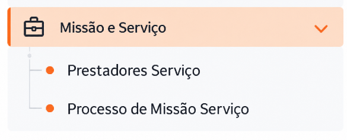
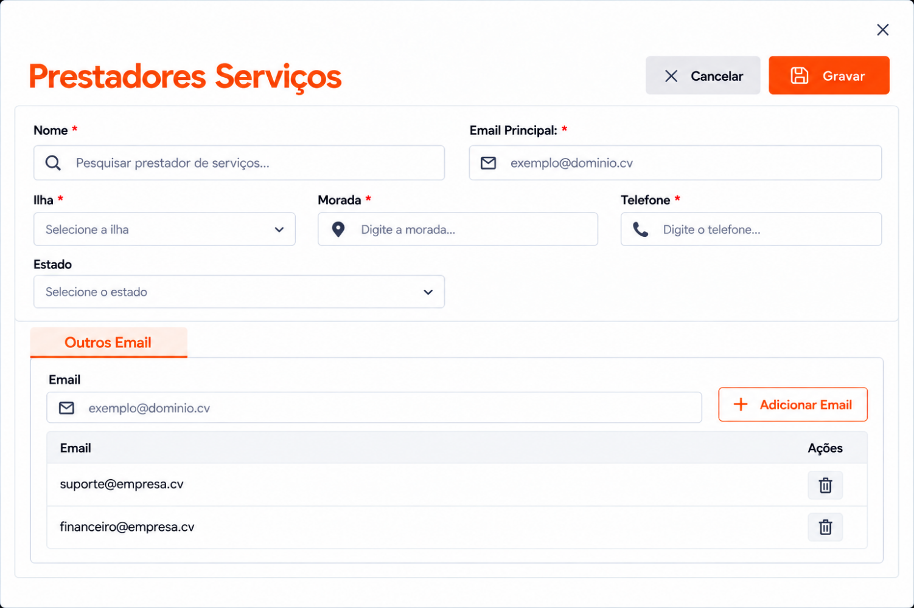
| Formulario | Tipo | Descrição | Gravação |
|---|---|---|---|
| Prestador serviço | |||
| Nome | INPSSIGOF.entidades | RH_T _PARAM_PRESTADOR.ENT_ID RH_T _PARAM_PRESTADOR.NOME | |
| Email Principal | RH_T _PARAM_PRESTADOR.EMAIL | ||
| Ilha | SIPSGLOBAL.GLB_T_GEOGRAFIA.ID | RH_T _PARAM_PRESTADOR.ILHA_ID | |
| Morada | RH_T _PARAM_PRESTADOR.MORADA | ||
| Telefone | RH_T _PARAM_PRESTADOR.TELEFONE | ||
| Estado | No registo deve guardar por defeito ativo | RH_T _PARAM_PRESTADOR.ESTADO | |
| Outros Email | |||
| RH_T _PARAM_PRESTADOR_DET.EMAIL | |||
| ----------------------- | ---------------------------------------------------------- | RH_T _PARAM_PRESTADOR_DET. PARAM_PREST_ID |
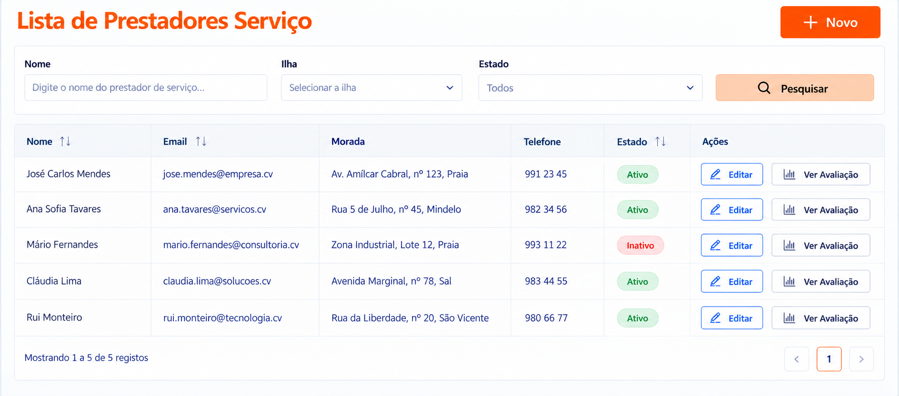
| Filtro | Tipo | Descrição |
|---|---|---|
| Nome | RH_T _PARAM_PRESTADOR.NOME | |
| ILHA | RH_T _PARAM_PRESTADOR.ILHA_ID | |
| Estado | RH_T _PARAM_PRESTADOR.ESTADO | |
| Lista | Tipo | Descrição |
| Nome | RH_T _PARAM_PRESTADOR.NOME | |
| RH_T _PARAM_PRESTADOR.EMAIL | ||
| Morada | RH_T _PARAM_PRESTADOR.MORADA | |
| Telefone | RH_T _PARAM_PRESTADOR.TELEFONE | |
| Estado | RH_T _PARAM_PRESTADOR.ESTADO | |
| Acções | ||
| Editar | Abre o mesmo formulário de registo | |
| Ver Avaliação | Abre o formulario abaixo (referente a todas as Avaliacoes Feito a um prestador em cada processo de uma missão) |
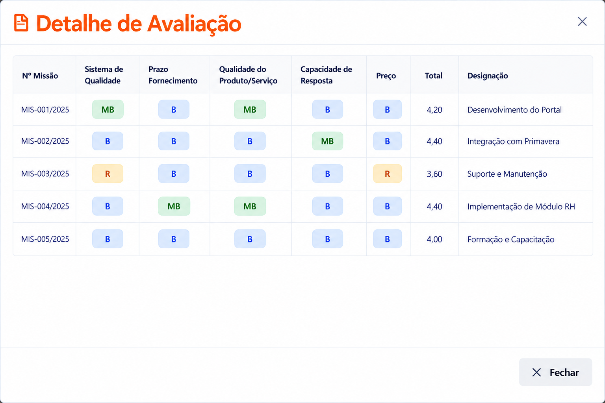
| Lista | Tipo | Descrição |
|---|---|---|
| Nº Missão | RH_T_MISSAO_SERVICO.NR_MISSAO (RH_T _MISSAO_PRESTADOR_AVAL.MISSAO_ID RH_T _MISSAO_PRESTADOR_AVAL.PRESTADOR_ID: id de tabela RH_T_MISSAO_PRESTADOR) | |
| Sistema de qualidade | RH_T _MISSAO_PRESTADOR_AVAL.SISTEMA_QUALIDADE | |
| Prazo fornecimento | RH_T _MISSAO_PRESTADOR_AVAL.PRAZO_FORNECIMENTO | |
| Qualidade do Produto | RH_T _MISSAO_PRESTADOR_AVAL.QUALIDADE_PRODUTO | |
| Capacidade Resposta | RH_T _MISSAO_PRESTADOR_AVAL.CAPACIDADE_RESPOSTA | |
| Preço | RH_T _MISSAO_PRESTADOR_AVAL.PRECO | |
| Total | RH_T _MISSAO_PRESTADOR_AVAL.TOTAL | |
| Designação | RH_T _MISSAO_PRESTADOR_AVAL.DESIGNACAO |
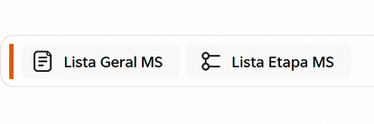
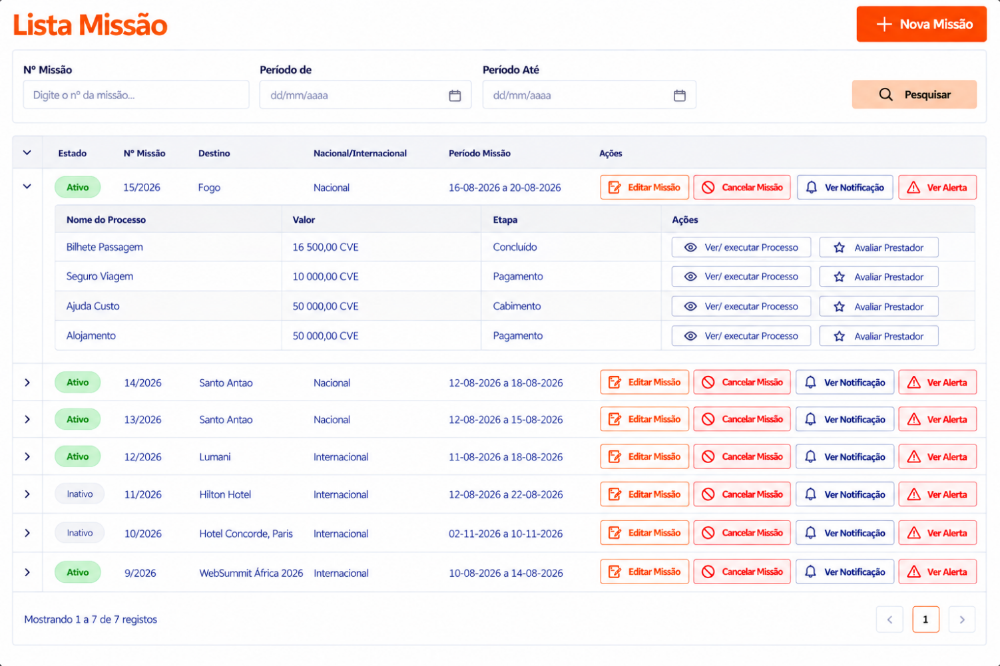
| Filtro | Tipo | Descrição | |
|---|---|---|---|
| Nª Missão | Permite filtrar a lista com base no número de missão. RH_T_MISSAO_SERV.NR_MISSAO | ||
| Periodo De: | DATE | Permite filtrar a lista com base na data de início da missão. RH_T_MISSAO_SERV.DATA_INICIO | |
| Periodo Até | DATE | Permite filtrar a lista com base na data de fim da missão. RH_T_MISSAO_SERV.DATA_FIM | |
| Lista | Tipo | Descrição | |
| Estado | TEXT | Estado do processo de missão | RH_T_MISSAO_SERVICO. ESTADO |
| Nª Missão | NR_MISSAO | Número de Missão | RH_T_MISSAO_SERVICO.NR_MISSAO |
| Nacional /Estrangeiro | RH_T_MISSAO_SERVICO.FLG_DESTINO | ||
| Periodo Missão | RH_T_MISSAO_SERVICO.DATA_INICIO e RH_T_MISSAO_SERVICO.DATA_FIM | ||
| Sub_Lista | |||
| Nome Processo | RH_T_MISSAO_PROCESSO.TIPO_PROCESSO onde ESTADO = ‘A’ | ||
| Valor | Valor total de Ajuda de custo RH_T_MISSAO_LOGISTICA.REFERENCIA = AJUDA_CUSTO | RH_T_MISSAO_LOGISTICA.VALOR_TOTAL RH_T_MISSAO_PROCESSO.ID= RH_T_MISSAO_LOGISTICA.MISSAO_PROCESSO_ID | |
| Valor total de Bilhete de passagem RH_T_MISSAO_LOGISTICA.REFERENCIA = ‘BILHETE_PASSAGEM’ | RH_T_MISSAO_LOGISTICA.VALOR_TOTAL RH_T_MISSAO_PROCESSO.ID= RH_T_MISSAO_LOGISTICA.MISSAO_PROCESSO_ID | ||
| Valor total de Alojamento RH_T_MISSAO_LOGISTICA.REFERENCIA = ‘ALOJAMENTO’ | RH_T_MISSAO_LOGISTICA.VALOR_TOTAL RH_T_MISSAO_PROCESSO.ID= RH_T_MISSAO_LOGISTICA.MISSAO_PROCESSO_ID | ||
| Valor total de seguro de viagem RH_T_MISSAO_LOGISTICA.REFERENCIA = ‘SEGURO_VIAGEM’ | RH_T_MISSAO_LOGISTICA.VALOR_TOTAL RH_T_MISSAO_PROCESSO.ID= RH_T_MISSAO_LOGISTICA.MISSAO_PROCESSO_ID | ||
| Etapa | O utilizador pode ver o nome da etapa em que o processo se encontra e também clicar no link para avançar para a próxima etapa DOMINIO = TIPO_PROCESSO_ETAPA REFERENTE = MISSAO_SERVICO | RH_T_MISSAO_PROCESSO.ETAPA | |
| Ver / Executar Processo | Permite ver detalhe ou executar um processo | ||
| Avaliar Prestador | Funcionalidade que permite avaliar a prestação de serviço de um prestador | ||
| Acções | |||
| Permite iniciar um novo processo de missão de viagem, abrindo o formulário da Etapa 1 – Submissão do Pedido de Missão. | |||
| Ver Notificacao | Permite visualializar todas as notificacoes desse processo | ||
| Ver alerta | Permite visualizar todas alertas geradas nesse processo | ||
| Cancelar | Permite Cancelar uma missão |
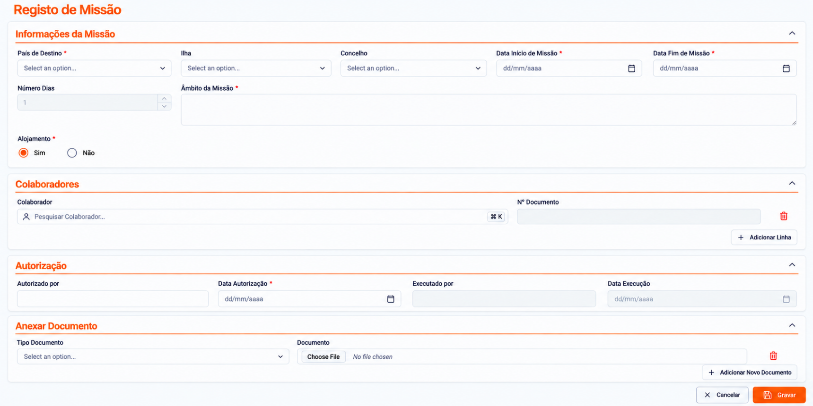
| Formulario | Tipo | Descrição | Gravação | |
|---|---|---|---|---|
| Informações da Missão | ||||
| Numero Missão | NUMBER | Gerado automaticamente pelo sistema (sequencial único). Não editável. Cada missão deve receber automaticamente um número sequencial único no momento da criação. Este número deve servir como identificador principal da missão em todo o sistema e deve ser utilizado em todas as comunicações documentos relacionados (Preenchimento Obrigatorio) | RH_T_MISSAO_SERVICO.NR_MISSAO | |
| País Destino | LOOCKUP | Indica O país do destino de missão. Obs.: Caso o país selecionado é Cabo Verde, o sistema considerará a missão como nacional; caso contrário, será considerada estrangeira. (Preenchimento Obrigatorio) | RH_T_MISSAO_SERVICO.PAIS_DESTINO_ID RH_T_MISSAO_SERVICO.FLG_DESTINO | |
| Ilha | Select | So aparece caso o Pais de destino for caboverde | RH_T_MISSAO_SERVICO.ILHA_ID | |
| Concelho | Select | So aparece caso o Pais de destino for caboverde | RH_T_MISSAO_SERVICO.CONCELHO_ID | |
| Descrição do Destino | TEXT | Especificar o local preciso de realização da missão (Preenchimento Obrigatorio) | RH_T_MISSAO_SERVICO.DESCRICAO_DESTINO | |
| Data inicio da Missão | DATE | Indicar a data início previsto para a realização da missão (Preenchimento Obrigatorio) | RH_T_MISSAO_SERVICO.DATA_INICIO | |
| Data Fim da Missão | DATE | Indicar a data final previsto para a realização da missão (Preenchimento Obrigatorio) | RH_T_MISSAO_SERVICO.DATA_FIM | |
| Número Dias | NUMBER | Calculado automaticamente entre data de início e fim. | RH_T_MISSAO_SERVICO.NR_DIAS | |
| Âmbito Missão | TEXTAREA | RH_T_MISSAO_SERVICO.AMBITO_MISSAO | ||
| Alojamento | RH_T_MISSAO_PROCESSO.ESTADO, onde o TIPO_PROCESSO = ALOJAMENTO | |||
| Informações dos Colaboradores | ||||
| Nome Do colaborador | LOOCKUP | Pesquisa o colaborador no sistema | RH_T_MISSAO_COLABORADOR.FUN_ID | |
| Numero Documento | TEXT | Preenchido automaticamente. | RH_T_MISSAO_COLABORADOR.NUM_DOCUMENTO | |
| ---------------------------- | HIDDEN | --------------------------------------------------------------------------- | RH_T_MISSAO_COLABORADOR.MISSAO_SERV_ID | |
| Autorização Prévia | ||||
| Autorizado por: | SELECT | Campo preenchido automaticamente com o nome do utilizador que submeteu o pedido, com possibilidade de alteração caso a submissão seja feita por alguém diferente da pessoa que autorizou. (Preenchimento Obrigatorio) | RH_T_MISSAO_SERVICO.AUTORIZADO_POR | |
| Data Autorização | DATE | Indique a data de autorização. Por defeito, o sistema preenche este campo com a data corrente, mas permite que seja alterada manualmente. (Preenchimento Obrigatorio) | RH_T_MISSAO_SERVICO.DATA_AUTORIZACAO | |
| Executado Por: | DESABLED | Esse campo só aparece, apôs o registo | RH_T_MISSAO_SERVICO.USER_REGISTO_NAME | |
| Data Execuçao | DESABLED | Esse campo só aparece, apôs o registo | RH_T_MISSAO_SERVICO.DATA_REGISTO | |
| Anexar Documento | ||||
| Tipo Documento | SELECT | Opcional. Permite anexar documentos como convites, agendas, etc. (PDF) RH_T_DOCUMENTO.TP_DOCUMENTO_ID , REFERENCIA = MISSOA_SERVICO | RH_T_DOCUMENTO.TP_DOCUMENTO_ID RH_T_DOCUMENTO.DOC_ID RH_T_DOCUMENTO.REFERENCIA_ID = ID DE RH_T_MISSAO_SERVICO RH_T_DOCUMENTO.REFERENCIA_NAME = 'RH_T_MISSAO_SERVICO' | |
| Documento | UPLOAD | Upload do documento | ||
| ------------------------------ | ------------ | ------------------------------------------------------------------------- | UPDATE : RH_T_MISSAO_SERVICO.ETAPA = ‘SUBMISSAO’ | |
| Ações | ||||
| Ao clicar neste botão, as informações do formulário são guardadas ou atualizadas (caso já exista um registo anterior), mas o processo não avança para a etapa seguinte. Ao clicar no botão, deve registar por defeito 4 registo referido ao 4 processo na tabela RH_T_MISSAO_PROCESSOS. O TIPO_PROCESSO Deve ser preenchido através do DOMINIO = TIPO_PROCESSO | ||||
Esta figura ilustra o processo de missão de viagem
| Formulário | Responsável | Gravação |
|---|---|---|
| ||
Prestadores Serviço | RH | Nesta etapa, o RH analisa o pedido e entra em contacto com agências de viagem para solicitar o envio da fatura proforma. O e-mail gerado solicita uma proposta detalhada, com base nas informações preenchidas pelo RH no sistema. Formulario: Para visualizar o desenho do formulário desta etapa, clique no link "".Ver Formulário Notificação: Ao confirmar é enviado uma notificação as agências selecionadas Nota: todas agências devem ter email associado na gestão entidade no financeiro |
| Emissão de Requisição | RH | Análise de Propostas e Emissão de Requisição Após a receção das propostas enviadas pelas agências de viagem (prestadoras de serviço), o RH dá seguimento ao processo de seleção e emissão das requisições. 📩 Receção e Análise das Propostas: ✅ Seleção da Agência e Geração da Requisição: Formulario: Para visualizar o desenho do formulário desta etapa, clique no link "".Ver Formulário Ouput: O sistema gera uma ou vários documentos de requisição automáticos de cada agência que será enviado automático por email. |
| Processamento Logística | RH | O RH verifica todos os aspetos logísticos da missão: Nessa etapa onde regista as seguintes informações: O cálculo da ajuda de custo dependerá dos seguintes fatores: Caso a empresa pague o alojamento sem alimentação, "logo transfere ao colaborador 2/3 do valor de ajuda de custo por dia, conforme estabelecido na tabela de preços de ajuda de custo. No caso que seja garantido alojamento e alimentação, logo o trabalhador terá direito a 1/3 (do montante estabelecido) de ajuda de custa cada dia. Se O colaborador vai a casa de família ele receberá 100% Formulario: Para visualizar o desenho do formulário desta etapa, clique no link "".Ver Formulário Anexos Documento: Permite anexar diferentes tipos documentos em falta (faturas relacionadas a missão de viagem, fatura recebida é validada e assinada pelo RH (digitalmente no sistema). O sistema encaminha a fatura para o SGAL para o processo de cabimentação. Notificação: Após a conclusão dos arranjos logísticos, o colaborador é informado sobre os detalhes da sua missão. O sistema envia uma notificação automática ao colaborador, detalhando as condições da viagem. O colaborador receberá email com o seguinte: |
| Validação UGAL | ||
| Aprovação RH | ||
| Cabimento | SGAL | Integração SGAL: O sistema deve permitir que o SGAL realize o cabimento diretamente na plataforma, ou que os dados sejam exportados para o SIPS FUN (sistema atual do SGAL). Para cabimento. O sistema deve gerir os seguinte cabimento: Cabimentos manuais (Cabimentos Internacionais): para caso de alojamento no exterior, o departamento financeiro inanceiro elabora uma nota de transferência que depois será anexado no cabimento. Esse tipo de cabimento é feito manualmente pelo Pessoal financeiro devido a reconversão de divisas |
| Autorização | RH | O cabimento é autorizado pelo RH para dar seguimento ao respetivo pagamento |
| Financeiro | É executado automaticamente pelo sistema, encerrando o processo assim que o pagamento for efetuado no sistema financeiro. Nao será necessário parecer no desenho do Processo |
Nesta seção serão apresentados o desenho e a especificação de cada uma das etapas do processo.
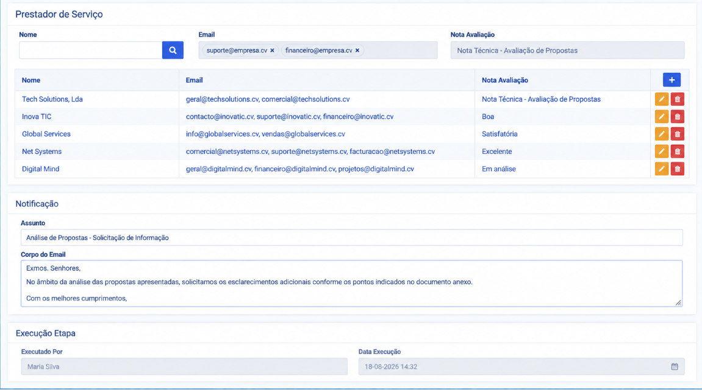
| Formulario | Tipo | Descrição | Gravação |
|---|---|---|---|
| Prestador serviço | |||
| Nome | Permite selecionar mais de um prestador de serviço (agência de viagem). A pesquisa dos nomes dos prestadores é feita na gestão de entidades do sistema financeiro. (Preenchimento Obrigatorio) RH_T_PARAM_PRESTADOR.NOME |
RH_T_MISSAO_PRESTADOR.PARAM_PREST_ID RH_T_NOTIFICACAO.NOME_RECEPTOR | |
| Preenchido automaticamente a partir de pesquisa de nome (Preenchimento Obrigatorio) RH_T_PARAM_PRESTADOR.EMAIL e RH_T_PARAM_PRESTADOR_DET.EMAIL | RH_T_NOTIFICACAO.EMAIL | ||
| ------------------- | ------------ | ------------------------------------------------ | RH_T_MISSAO_PRESTADOR.MISSAO_SERV_ID RH_T_MISSAO_PRESTADOR. PARAM_PREST_ID |
| Notificação (envia notificação a cada email associado ao Prestador com estado Ativo RH_T _PARAM_PRESTADOR_DET.EMAIL e ESTADO = ‘A’) | |||
| Assunto | Preenchido automaticamente com base na parametrização de notificações definida no sistema. RH_T_PARAM_NOTIFICACAO.ASSUNTO, onde REFERENCIA = ‘MISSAO_PRESTADOR’ O utilizador pode editar | RH_T_NOTIFICACAO.ASSUNTO RH_T_NOTIFICACAO.REFERENCIA RH_T_NOTIFICACAO.DATA_ENVIO | |
| Corpo do Email | Preenchido automaticamente com base na parametrização de notificações definida no sistema. RH_T_PARAM_NOTIFICACAO.CORPO_EMAIL O utilizador pode editar | RH_T_NOTIFICACAO.MESSAGE | |
| ---------------------- | HIDDEN | --------------------------------------------- | RH_T_NOTIFICAO.REFERENCIA_NAME = RH_T_MISSAO_PRESTADOR RH_T_NOTIFICACAO.REFERENCIA_ID = ID DE RH_T_MISSAO_PRESTADOR |
| ---------------------------- | ------------- | UPDATE: RH_T_MISSAO_PROCESSO.ETAPA= ‘PRESTADOR_SERVICO’ | |
| Execução Etapa | |||
| Executado Por: | DESABLED | Esse campo só aparece, apôs o registo | RH_T_MISSAO_PRESTADOR.USER_REGISTO_NAME |
| Data Execuçao | DESABLED | Esse campo só aparece, apôs o registo | RH_T_MISSAO_PRESTADOR.DATA_REGISTO |
| Acoes | |||
| Ao clicar neste botão, as informações do formulário são guardadas ou atualizadas (caso já exista um registo anterior), mas o processo não avança para a etapa seguinte. | |||
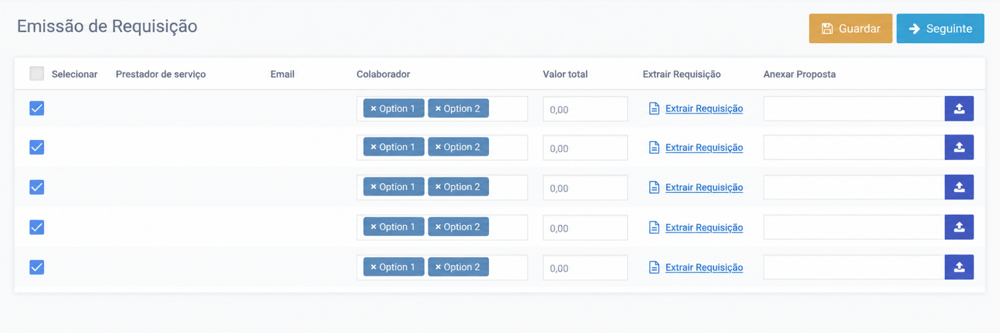
| Formulario | Tipo | Descrição | Gravação |
|---|---|---|---|
| selecionar | Permite selecionar uma ou mais prestadoras para o envio da requisição. | ------------------------------------------- | |
| Prestador serviço | É preenchido automaticamente o nome de todos os prestadores aos quais foi enviada a proposta. RH_T_MISSAO_PRESTADOR.id, RH_T_PARAM_PRESTADOR.NOME | RH_T_MISSAO_REQUISICAO.MISSAO_PREST_ID | |
| É preenchido automaticamente o email de todos os prestadores aos quais foi enviada a proposta. RH_T_MISSAO_PRESTADOR.EMAIL | -------------------------------------------- | ||
| Colaborador | Permite associar um ou mais colaboradores a cada prestador de serviço para o envio da requisição. (Preenchimento Obrigatorio) RH_T_MISSAO_COLABORADOR.FUN_ID | RH_T_MISSAO_REQUISICAO_COLAB.MISSAO_COLAB_ID RH_T_MISSAO_REQUISICAO_COLAB.MISSAO_REQUISICAO_ID | |
| Valor total | RH_T_MISSAO_REQUISICAO.VALOR_TOTAL | ||
| -------------------- | O número de reguisicao sequencial anual…. indenpendente de tipo de missão. Esse número é agrupado por cada prestador | RH_T_MISSAO_REQUISICAO.NR_REQUISACAO | |
| Anexar Proposta | Permite anexar a proposta recebida por email, enviada pelos prestadores. | RH_T_DOCUMENTO.TP_DOCUMENTO_ID RH_T_DOCUMENTO.REFERENCIA_ID = ONDE REFERENCIA = ‘PROPOSTA_REQUISICAO_MS’ | |
| UPDATE: RH_T_MISSAO_SERVICO.ETAPA = ‘EMISSAO_REQUISICAO | |||
| Extrair Requisição | HPERLINK | ||
| Execução Etapa | |||
| Executado Por | desabled | RH_T_MISSAO_REQUISICAO.USER_REGISTO_ID | |
| Data Execução | desabled | RH_T_MISSAO_REQUISICAO.DATA_REGISTO | |
| Acoes | |||
| Ao clicar neste botão, as informações do formulário são guardadas ou atualizadas (caso já exista um registo anterior), mas o processo não avança para a etapa seguinte. | |||
Deve tambºem registar na tabela RH_T_NOTIFICACAO |
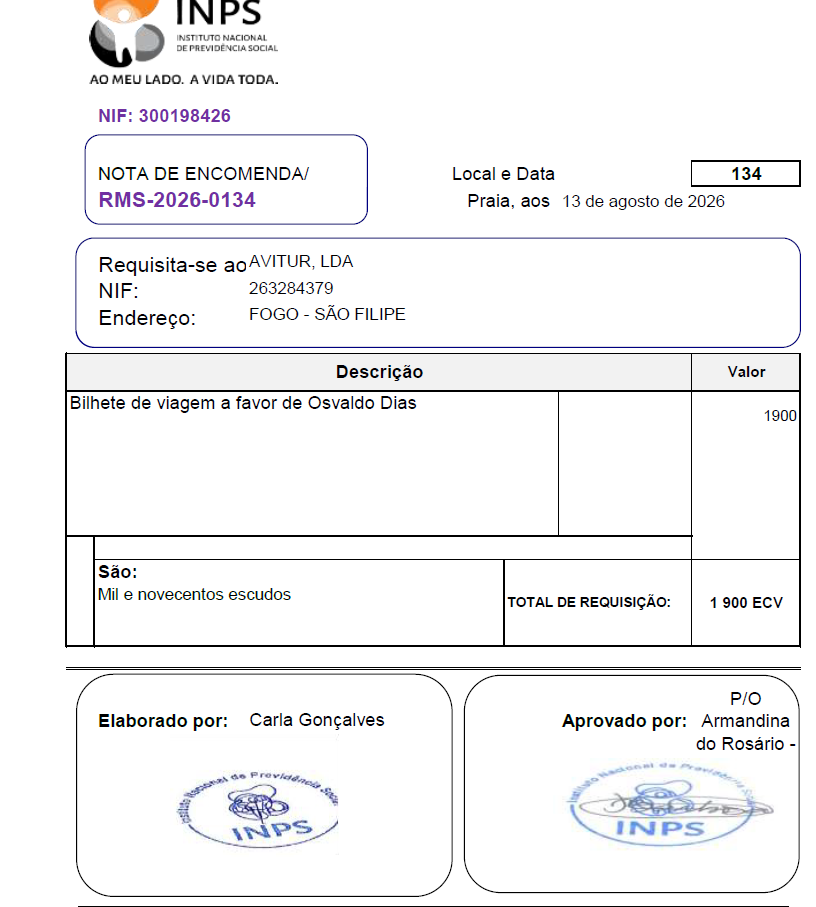
| Formulario | Descrição | Fonte de dados |
|---|---|---|
| NIF | Nit de inps | RH_T_DADOS_INSTITUICAO.NIF |
| NOTA DE ENCOMENDA | RMS - ||ano currente || RH_T_MISSAO_REQUISICAO.NR_REQUISACAO | RH_T_MISSAO_REQUISICAO.NR_REQUISACAO |
| Local e Data | Data corrente de requisição | Praia aos, || data corrente |
| Numbero de requisição | RH_T_MISSAO_REQUISICAO.NR_REQUISACAO | |
| Requisita-se ao | Nome do prestador | RH_T_PARAM_PRESTADOR.NOME |
| Nif | Nif do prestador | RH_T_PARAM_PRESTADOR.NIF |
| Endereço | Endereço do prestador | RH_T_PARAM_PRESTADOR.MORADA |
| LISTA | ||
| Descrição | Tipo de requisição com os colaboradores envolvidos | RH_T_MISSAO_PROCESSO.TIPO_PROCESSO ||’a favor de’ || RH_T_MISSAO_REQUISICAO_COLAB._COLAB_ID, RH_T_MISSAO_COLABORADOR.FUN_ID, RH_T_FUNCIONARIOS.NOME |
| Valor | Volor da Requisicao | RH_T_MISSAO_PROCESSO.VALOR_TOTAL |
| São | Descrivaer o valor todal por extenso | ----------------------------------------- |
| Total de Requisição | Somatória do Valor | ---------------------------------------------- |
| Elaborado Por | Deve trazer prrenchido com a informação recolhida no registo de missoa no campo autorizado por | RH_T_MISSAO_SERVICO.AUTORIZADO_POR |
| Aprovado por | Quem submeteu etapa | RH_T_MISSAO_REQUISICAO. USER_REGISTO_NAME |
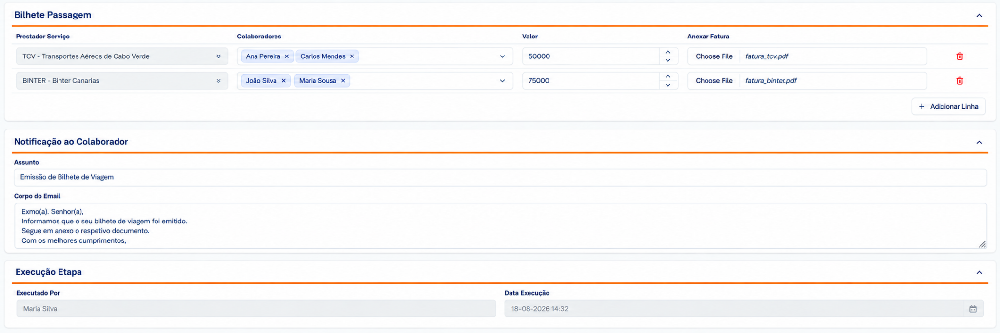
| Formulario | Tipo | Descrição | Gravação |
|---|---|---|---|
| Bilhete Passagem | |||
| Prestador Serviço | Nome do prestador de serviço (preenchido automaticamente com os dados da requisição da etapa anterior). (Preenchimento Obrigatorio) RH_T_MISSAO_PRESTADOR.NOME | RH_T_MISSAO_LOGISTICA.PRESTADOR_SERV_ID | |
| Colaboradores | MULTISELECT | Preenchido automaticamente a partir dos dados da requisição da etapa anterior. (Preenchimento Obrigatorio) RH_T_MISSAO_COLABORADOR.FUN_ID | RH_T_MISSAO_LOGISTICA_DET.MISSAO_LOGIST_ID RH_T_MISSAO_LOGISTICA_DET.MISSAO_COLAB_ID |
| Valor | Introduzir o Valor de Bilhete de Passagem. (Preenchimento Obrigatorio) | RH_T_MISSAO_LOGISTICA.VALOR_TOTAL | |
| --------------------------------- | HIDDEN | --------------------------------------------------------------------------- | RH_T_MISSAO_LOGISTICA.REFERENCIA = ‘BILHETE_PASSAGEM’ |
| ------------------------------- | HIDDEN | --------------------------------------------------------------------------- | RH_T_MISSAO_LOGISTICA.MOEDA = ‘CVE’ |
| ---------------------------- | ---------------- | RH_T_MISSAO_PROCESSO.ID | RH_T_MISSAO_LOGISTICA.MISSAO_PROCESSO_ID |
| --------------------------- | ---------------- | RH_T_MISSAO_PROCESSO.ETAPA = ‘LOGISTICA´’ |
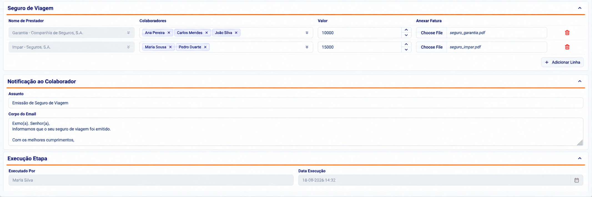
| Formulario | Tipo | Descrição | Gravação |
|---|---|---|---|
| Seguro Viagem | |||
| Nome | LOOKUP | Nome da seguradora (permite pesquisar a entidade no sistema financeiro). (Preenchimento Obrigatorio) INPSSIGOF.ENTIDADE | RH_T_MISSAO_LOGISTICA.NOME_SEGURADORA RH_T_MISSAO_LOGISTICA.ENT_ID |
| colaborador | Multiselect | Permite associar um ou mais colaboradores afetos a cada seguro de viagem. (Preenchimento Obrigatorio) RH_T_MISSAO_COLABORADOR.NOME | RH_T_MISSAO_LOGISTICA_DET.MISSAO_LOGIST_ID RH_T_MISSAO_LOGISTICA_DET.MISSAO_COLAB_ID |
| Valor | Valor de seguro de viagem (Preenchimento Obrigatorio) | RH_T_MISSAO_LOGISTICA.VALOR_TOTAL | |
| ------------------------------------- | HIDDEN | RH_T_MISSAO_LOGISTICA.REFERENCIA = ‘SEGURO_VIAGEM’ | |
| ---------------------------------- | HIDDEIN | RH_T_MISSAO_LOGISTICA.MOEDA = ‘CVE’ | |
| Anexo | Anexar documento comprovativo de Seguro de viagem RH_T_TIPO_DOCUMENTO ONDE REFERENCIA = ‘SEGURO_VIAGEM’ | RH_T_DOCUMENTO.TP_DOCUMENTO_ID RH_T_DOCUMENTO.DOC_ID RH_T_DOCUMENTO.TP_DOCUMENTO_ID RH_T_DOCUMENTO.REFERENCIA_ID = ID RH_T_MISSAO_LOGISTICA | |
| ---------------------------- | ---------------- | RH_T_MISSAO_PROCESSO.ID | RH_T_MISSAO_LOGISTICA.MISSAO_PROCESSO_ID |
| --------------------------- | ---------------- | RH_T_MISSAO_PROCESSO.ETAPA = ‘LOGISTICA´’ |
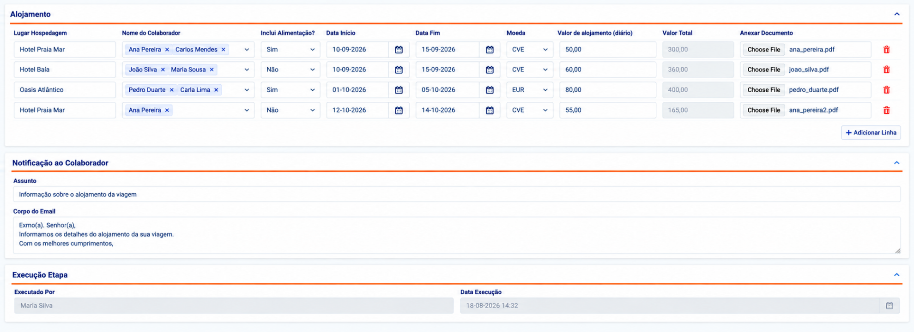
| Formulario | Tipo | Descrição | Gravação |
|---|---|---|---|
| Alojamento | |||
| Logar Hospedagem | Nome do local onde o colaborador ficará hospedado. | RH_T_MISSAO_LOGISTICA.LUGAR_HOSPEDAGEM | |
| Inclui Alimentação | Indicar se o alojamento inclui alimentação. | RH_T_MISSAO_LOGISTICA.FLG_ALIMENTACAO | |
| Valor Alojamento (Diário) | Valor de alojamento | RH_T_MISSAO_LOGISTICA.VALOR_DIARIO | |
| Valor Total | Valor total de alojamento | RH_T_MISSAO_LOGISTICA.VALOR_TOTAL | |
| Moeda | Tipo de moeda em que o alojamento será pago. | RH_T_MISSAO_LOGISTICA.MOEDA | |
| Data inicio | Data de início do alojamento (preenchida automaticamente com a data de início da missão definida na primeira etapa, com possibilidade de alteração, se necessário). | RH_T_MISSAO_LOGISTICA.DATA_INICIO | |
| Data Fim | Data de fim do alojamento (preenchida automaticamente com a data de início da missão definida na primeira etapa, com possibilidade de alteração, se necessário). | RH_T_MISSAO_LOGISTICA.DATA_FIM | |
| ---------------------------- | Verificar número de dias apartir de data início e data fim | RH_T_MISSAO_LOGISTICA.NR_DIAS | |
| Colaborador | Permite associar um ou mais colaboradores afetos a cada alojamento RH_T_MISSAO_COLABORADOR.FUN_ID | RH_T_MISSAO_LOGISTICA_DET.MISSAO_LOGIST_ID RH_T_MISSAO_LOGISTICA_DET.MISSAO_COLAB_ID | |
| -------------------------------- | ------------------ | -------------------------------------------------------------------- | RH_T_MISSAO_LOGISTICA.REFERENCIA = ‘ALOJAMENTO’ |
| Anexar Documento | Permite anexar o documento comprovativo, caso necessário. RH_T_TIPO_DOCUMENTO ONDE REFERENCIA = ‘ALOJAMENTO’’ | RH_T_DOCUMENTO.TP_DOCUMENTO_ID RH_T_DOCUMENTO.DOC_ID RH_T_DOCUMENTO.REFERENCIA = ID RH_T_MISSAO_LOGISTICA | |
| ----------------------------- | ------------------ | RH_T_MISSAO_PROCESSO.ID | RH_T_MISSAO_LOGISTICA.MISSAO_PROCESSO_ID |
| RH_T_MISSAO_PROCESSO.ETAPA = ‘LOGISTICA´’ | |||
| Ações | |||
| Ao clicar neste botão, as informações do formulário são guardadas ou atualizadas (caso já exista um registo anterior), mas o processo não avança para a etapa seguinte. | |||
NOTA: o colaborador Recebe notificação sobre a logistica da viagem (Deve registar na tabela RH_T_NOTIFICACAO) |
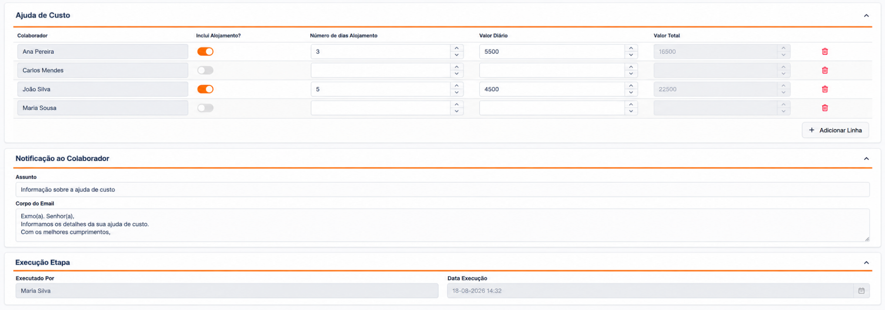
| Formulario | Tipo | Descrição | Gravação |
|---|---|---|---|
| Ajuda de Custo | |||
| Colaborador | Selecionar o colaborador afeto a missão (Preenchimento Obrigatorio) RH_T_MISSAO_COLABORADOR.FUN_ID | RH_T_MISSAO_LOGISTICA_DET.MISSAO_LOGIST_ID RH_T_MISSAO_LOGISTICA_DET.MISSAO_COLAB_ID | |
| Inclui Alojamento? | Indicar de ajuda de custo inclui alojamento | RH_T_MISSAO_LOGISTICA.FLG_ALOJAMENTO | |
| Número Dias Alojamento | Indicar o número de dias em que o colaborador assumirá o alojamento. | RH_T_MISSAO_LOGISTICA.NR_DIAS | |
| Valor Diário | Preenchido automaticamente com base no cálculo definido na parametrização. (Preenchimento Obrigatorio) | RH_T_MISSAO_LOGISTICA.VALOR_DIARIO | |
| Valor Total | Calculo entre o valor diario e numero de dias de missão (Preenchimento Obrigatorio) | RH_T_MISSAO_LOGISTICA.VALOR_TOTAL | |
| -------------------------------- | HIDDEN | ---------------------------------------------------------------------------- | RH_T_MISSAO_LOGISTICA.REFERENCIA = ‘AJUDA_CUSTO’ |
| ----------------------------- | ------------------ | RH_T_MISSAO_PROCESSO.ID | RH_T_MISSAO_LOGISTICA.MISSAO_PROCESSO_ID |
| ---------------------------- | -------------------------------------- | RH_T_MISSAO_PROCESSO.ETAPA = ‘LOGISTICA´’ | |
| Ações | |||
| Ao clicar neste botão, as informações do formulário são guardadas ou atualizadas (caso já exista um registo anterior), mas o processo não avança para a etapa seguinte. | |||
NOTA: o colaborador Recebe notificação sobre a logistica da viagem (Deve registar na tabela RH_T_NOTIFICACAO) |
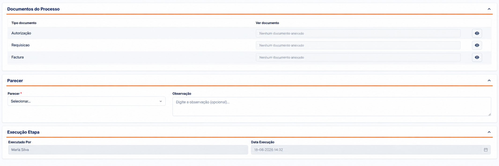
| Formulario | Tipo | Descrição | Gravação |
|---|---|---|---|
| Documento Do Processo | |||
| Tipo documento | Deve mostrar esses três tipos de documentos | ------------------------------- | |
| Ver Documento | ---------------------------------- | ||
| Parecer | |||
| Parecer | Select DOMINIO = PARECER | RH_T_MISSSAO_PROCESSO_DET.PARECER | |
| Observação | RH_T_MISSSAO_PROCESSO_ DET.OBSERVACAO | ||
| ----------------- | ------------------------------------------------------- | RH_T_MISSSAO_PROCESSO_DET .REPONSAVEL= ‘UGAL’ | |
| Execução Etapa | |||
| Executado por | RH_T_MISSSAO_PROCESSO_ DET.USER_REGISTO_NAME | ||
| Data Execução | RH_T_MISSSAO_PROCESSO_ DET.DATA_REGISTO | ||
| ----------------------- | Update etapa | RH_T_MISSAO_PROCESSO.ETAPA = ‘VALIDACAO_UGAL´’ | |
| Ações | |||
| Ao clicar neste botão, as informações do formulário são guardadas ou atualizadas (caso já exista um registo anterior), mas o processo não avança para a etapa seguinte. | |||
NOTA: o colaborador Recebe notificação sobre a logistica da viagem (Deve registar na tabela RH_T_NOTIFICACAO) |
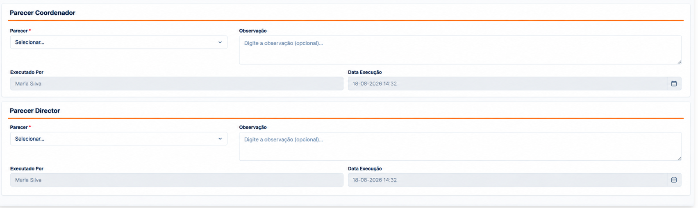
| Formulario | Tipo | Descrição | Gravação |
|---|---|---|---|
| Parecer Coordenador | |||
| Parecer | RH_T_MISSSAO_PROCESSO_DET.PARECER | ||
| Observação | RH_T_MISSSAO_PROCESSO_ DET.OBSERVACAO | ||
| Executado por | RH_T_MISSSAO_PROCESSO_ DET.USER_REGISTO_NAME | ||
| Data Execução | RH_T_MISSSAO_PROCESSO_ DET.DATA_REGISTO | ||
| --------------------- | RH_T_MISSSAO_PROCESSO_DET.REPONSAVEL= ‘COORDENADOR_RH’ | ||
| Parecer Director | |||
| Parecer | RH_T_MISSSAO_PROCESSO_DET.PARECER | ||
| Observação | RH_T_MISSSAO_PROCESSO_ DET.OBSERVACAO | ||
| Executado por | RH_T_MISSSAO_PROCESSO_ DET.USER_REGISTO_NAME | ||
| Data Execução | RH_T_MISSSAO_PROCESSO_ DET.DATA_REGISTO | ||
| ----------------------------------- | ---------------- | --------------------------------------------------------- | RH_T_MISSSAO_PROCESSO_DET.REPONSAVEL= ‘DIRECTOR_RH’ |
| ----------------------- | Update etapa | RH_T_MISSAO_PROCESSO.ETAPA = ‘APROVACAO_RH´’ | |
| Ações | |||
| Ao clicar neste botão, as informações do formulário são guardadas ou atualizadas (caso já exista um registo anterior), mas o processo não avança para a etapa seguinte. | |||
NOTA: |
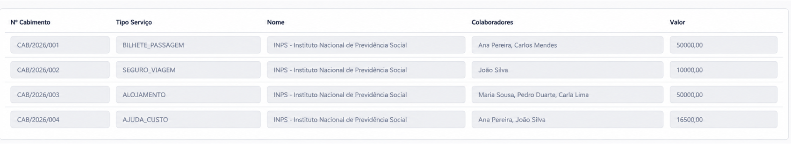
| Formulario | Tipo | Descrição | Fonte Dados |
|---|---|---|---|
| selecionar | CHECK | Permite selecionar cada item da lista (tipo de serviço) que se pretende cabimentar RH_T_MISSAO_LOGISTICA. | RH_T_MISSAO_LOGISTICA.MISSAO_PROCESSO_ID |
| Tipo serviço | TEXT | Apresenta, em cada linha, os seguintes tipos de serviço associados à missão: (Preenchimento Obrigatorio) RH_T_MISSAO_LOGISTICA.REFERENCIA RH_T_MISSAO_LOGISTICA.MISSAO_PROCESSO_ID | ----------------------------------------------------- |
| Nome | TEXT | Apresenta o nome do prestador de serviço ou, no caso da ajuda de custo, o nome do colaborador. (Preenchimento Obrigatorio) RH_T_MISSAO_LOGISTICA.PRESTADOR_SERV_ID ou RH_T_MISSAO_LOGISTICA_DET.MISSAO_COLABORADOR_ID | --------------------------------------------------------- |
| Valor | NUMBER | Apresenta o valor total a ser cabimentado por tipo de serviço. (Preenchimento Obrigatorio) RH_T_MISSAO_LOGISTICA.VALOR_TOTAL | -------------------------------------------------- |
| Anexar Documento | UPLOAD | Permite Anexar documento de Bilhete de passagem. RH_T_TIPO_DOCUMENTO ONDE REFERENCIA = ‘BILHETE_PASSAGEM’’ | RH_T_DOCUMENTO.TP_DOCUMENTO_ID RH_T_DOCUMENTO.DOC_ID RH_T_DOCUMENTO.TP_DOCUMENTO_ID RH_T_DOCUMENTO.REFERENCIA = ID RH_T_MISSAO_LOGISTICA |
| Ver Detalhe | HYPERLINK | Permite visualizar os detalhes das informações inseridas na etapa anterior para cada tipo de serviço | |
| ------------------------ | -------------- | -------------------------------------------------------------------------- | UPDATE |
| UPDATE RH_T_MISSAO_SERVICO.ETAPA = ‘CABIMENTO’ | |||
| Acões | |||
| Ao clicar neste botão, as informações do formulário são guardadas ou atualizadas (caso já exista um registo anterior), mas o processo não avança para a etapa seguinte. | |||
| Formulario | Tipo | Descrição | Gravação |
|---|---|---|---|
| Tipo serviço | TEXT | Apresenta, em cada linha, os seguintes tipos de serviço associados à missão: RH_T_MISSAO_LOGISTICA.REFERENCIA | --------------------------------------------------------- |
| Nome | TEXT | Apresenta o nome do prestador de serviço ou, no caso da ajuda de custo, o nome do colaborador. RH_T_MISSAO_LOGISTICA.PRESTADOR_SERV_ID ou RH_T_MISSAO_LOGISTICA_DET.MISSAO_COLABORADOR_ID | ------------------------------------------------------------ |
| Valor | NUMBER | Apresenta o valor total a ser cabimentado por tipo de serviço. RH_T_MISSAO_LOGISTICA.VALOR_TOTAL | -------------------------------------------------------------- |
| Ver Detalhe | HYPERLINK | Permite visualizar os detalhes das informações inseridas na etapa anterior para cada tipo de serviço | --------------------------------------------------------------- |
| Numero Cabimento | CHECK | Mostra o numero de Cabimento Gerado na Etapa Anteriror RH_T_MISSAO_LOGISTICA.CAB_ID | ----------------------------------------------------------------- |
| ------------------------ | -------------- | -------------------------------------------------------------------------- | UPDATE RH_T_MISSAO_LOGISTICA.ESTADO_CABIMENTO = ‘AUTORIZADO’ |
| ----------------------- | -------------- | ----------------------------------------------------------------------- | UPDATE: RH_T_MISSAO_SERVICO.ETAPA = ‘PAGAMENTO’ RH_T_MISSAO_SERVICO.ESTADO = ‘FINALIZADO |
| Acões | |||
| Ao clicar neste botão, as informações do formulário são guardadas ou atualizadas (caso já exista um registo anterior), mas o processo não avança para a etapa seguinte. | |||
É executado automaticamente pelo sistema, encerrando o processo assim que o pagamento for efetuado no sistema financeiro.
| UPDATE: RH_T_MISSAO_PROCESSO.ETAPA = ‘PAGAMENTO’ RH_T_MISSAO_SERVICO.ESTADO = ‘FINALIZADO |
|---|
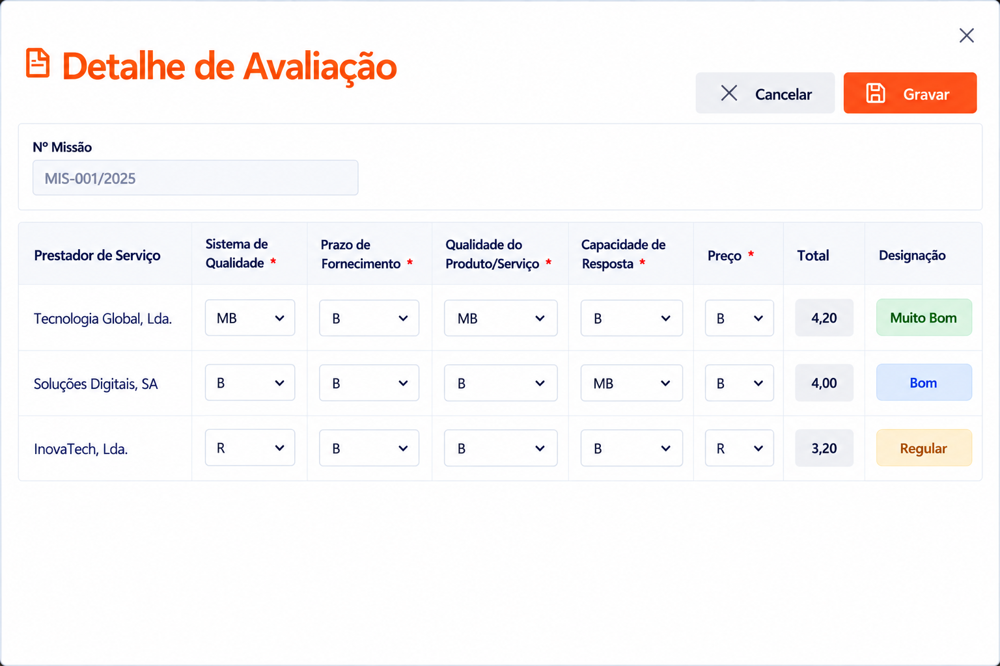
| Formulario | Tipo | Descrição | Gravação |
|---|---|---|---|
| Nº Missão | RH_T_MISSAO_SERVICO.NR_MISSAO | ||
| Lista | |||
| Prestadores serviços | RH_T_MISSAO_PRESTADOR.ID, RH_T_PARAM_PRESTADOR.NOME | RH_T_MISSAO_PRESTADOR_AVAL.MISSAO_PREST_ID | |
| Sistema de Qualidade | DOMINIO AVALIACAO_FORNECEDOR ,REFERENCIA = AVALIACAO | RH_T_MISSAO_PRESTADOR_AVAL.SISTEMA_QUALIDADE Para fazer o cálculo deve ter em conta DOMINIO AVALIACAO_FORNECEDOR, VALUE = SISTEMA_QUALIDADE REFERENCIA = PESO | |
| Prazo de Fornecimento | DOMINIO AVALIACAO_FORNECEDOR ,REFERENCIA = AVALIACAO | RH_T_MISSAO_PRESTADOR_AVAL.PRAZO_FORNECEIMENTO DOMINIO= AVALIACAO_FORNECEDOR, VALUE = PRAZO_FORNECIMENTO REFERENCIA = PESO | |
| Qualidade do Produto / Serviço | DOMINIO AVALIACAO_FORNECEDOR ,REFERENCIA = AVALIACAO | RH_T_MISSAO_PRESTADOR_AVAL.QUALIDADE_PRODUTO DOMINIO=AVALIACAO_FORNECEDOR, VALUE = QUALIDADE_PRODUTO REFERENCIA = PESO | |
| Capacidade de Resposta | DOMINIO AVALIACAO_FORNECEDOR ,REFERENCIA = AVALIACAO | RH_T_MISSAO_PRESTADOR_AVAL.CAPACIDADE_RESPOSTA DOMINIO=AVALIACAO_FORNECEDOR, VALUE = CAPACIDADE_RESPOSTA REFERENCIA = PESO | |
| Preço | DOMINIO AVALIACAO_FORNECEDOR ,REFERENCIA = AVALIACAO | RH_T_MISSAO_PRESTADOR_AVAL.PRECO DOMINIO=AVALIACAO_FORNECEDOR, VALUE= PRECO REFERENCIA = PESO | |
| Total | RH_T_MISSAO_PRESTADOR_AVAL.TOTAL Somatória dos cinco | ||
| Designação | RH_T_MISSAO_PRESTADOR_AVAL.DESIGNACAO DOMINIO=AVALIACAO_FORNECEDOR, REFERENCIA= DESIGNACAO | ||
| Acões | |||
| Total : 5 + 15 + 40 + 20 + 15 = 95% |
| Implementar job que regista alerta (alertas descritas acima) |
|---|
| Enviar notificacao em cada uma das etapas descritas acima |
|---|
| Lista | Tipo | Descrição | |
|---|---|---|---|
| Motivo Cancelamento | TEXAREA | Estado do processo de missão | RH_T_MISSAO_SERVICO. MOTIVO_CANCELAMENTO |
UPDATE EM TODAS TABELAS ASSOSSIADAS A MISSAO Caso a viagem já tenha ultrapassado a etapa de análise, deverá ser enviada novamente uma notificação a todos os que anteriormente receberam notificação relativa a essa missão, informando, desta vez, o seu cancelamento. |
Essa lista deve filtrar somente os processos nas etapas filtradas. Apos clicar no “Executar Etapa” Devera abrir o processo nae tapa em questão.
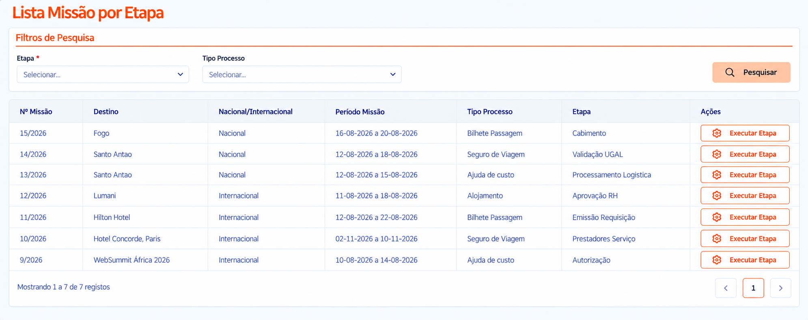
| Filtro | Tipo | Descrição | |
|---|---|---|---|
| Etapa | |||
| Tipo Processo | |||
| Lista | Tipo | Descrição | |
| Nª Missão | NR_MISSAO | Número de Missão | RH_T_MISSAO_SERVICO.NR_MISSAO |
| Nacional /Estrangeiro | RH_T_MISSAO_SERVICO.FLG_DESTINO | ||
| Periodo Missão | RH_T_MISSAO_SERVICO.DATA_INICIO e RH_T_MISSAO_SERVICO.DATA_FIM | ||
| Tipo Processo | DOMINIO = TIPO_PROCESSO | RH_T_MISSAO_PROCESSO.TIPO_PROCESSO | |
| Etapa | DOMINIO = TIPO_PROCESSO_ETAPA REFERENTE = MISSAO_SERVICO | RH_T_MISSAO_PROCESSO.ETAPA | |
| Acções | |||
| Executar Processo |
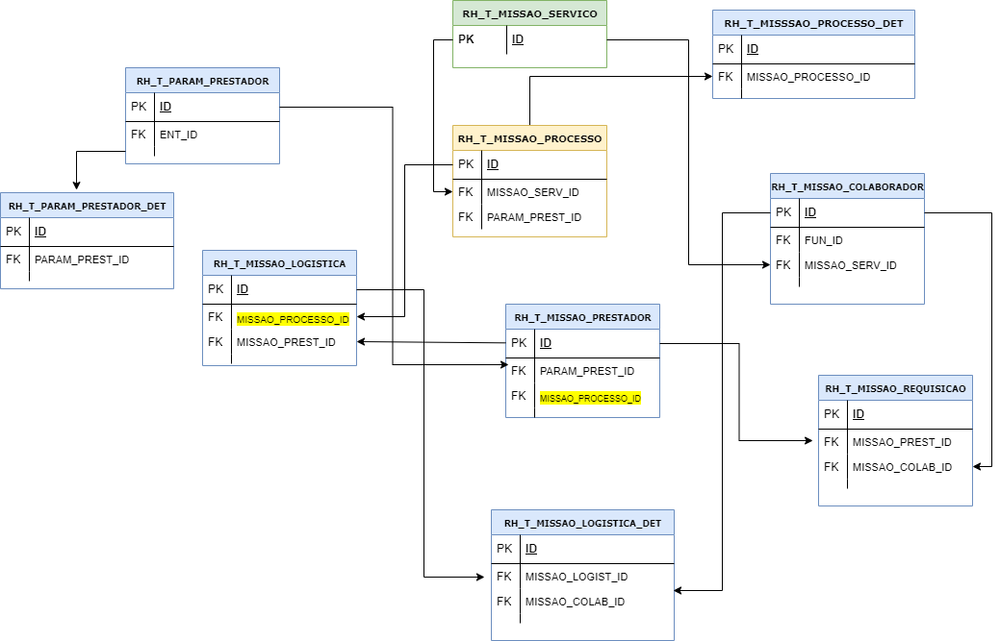